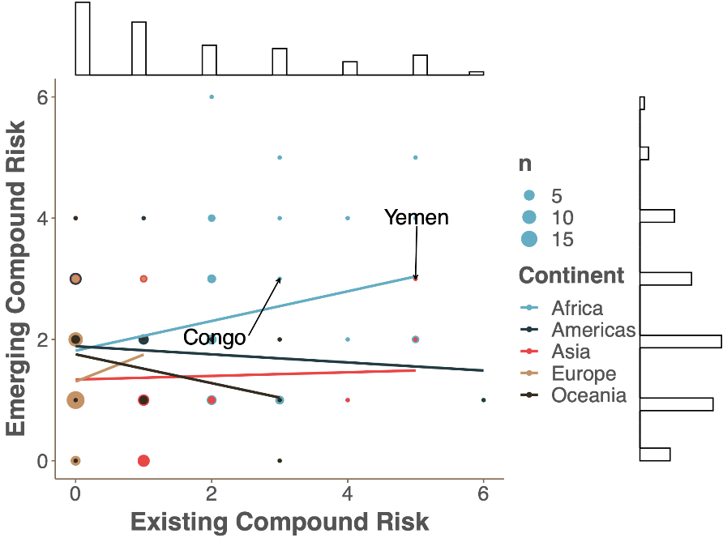

6 # RESULTS
6.1 Time horizons within the CRM
Levels of compound risk can be looked at in many different ways depending on the interests and needs of intended users. For example, users may be primarily interested in knowing whether a given set of countries is predisposed to compound risks based on historical trends and underlying response capacities. Others may be more interested in understanding the extent to which a given country is experiencing changing risk conditions, based on recent or expected trends. Lastly, some users may wish to take both of these sources of information into account to understand how recent changes in risk conditions are likely to impact on a country’s overall levels of compound risk in the near future.
Recognizing the diversity of user needs, the CRM produces underlying vulnerability, emerging threats and overall alert flag outlooks:
- Underlying vulnerability is a measure of a county’s predisposition to the occurrence and impacts of compound crises based on historical trends and underlying coping capacities. It can be thought of as a measure of systemic vulnerability, using static indicators to quantify levels of risk across all six dimensions used in the CRM. The majority of data sources come from multi-dimensional risk indices that combine elements of exposure, sensitivity and response capacity to given threats. Most inputs to the CRM are updated on an annual basis (e.g. the EU’s INFORM risk index, WFP’s Proteus index or the EIU’s Global Health Score index)18, and hence considered static given the low frequency of updates.
Use-case: Most relevant to decision makers seeking a holistic assessment of compound risk hotspots based on historical trends and underlying capacities.
Strengths: Comprised of comprehensive multi-dimensional indexes and well-established thresholds; an adequate gauge of systemic vulnerability to compound crises.
Limitations: Does not take into account latest trends and changes in underlying risk capacities (e.g. the status and nature of COVID impacts).
- Emerging threats provides a near real-time assessment of recent or expected changes in a country’s risk profile. It uses dynamic indicators that reflect a country’s immediate status or provide an outlook on the near-to-medium term future (i.e. up to 12 months ahead). Data is similarly sourced from a range of internal and external risk monitoring initiatives that provide regular updates on changes in risk profiles (such as FEWSNET, ACLED and regional meteorological forecasts)19. Where possible, emerging threats indicators are chosen to align with those used in determining underlying vulnerability. It is worth noting that, ideally, emerging compound risk would be further disaggregated into immediate (up to 3 months), short-term (up to 12 months) and medium-to-long-term (up to 3-5 years) risk outlooks. However, data limitations mean that this first iteration of the CRM will group future risks together. Going forward, the team will work to further refine the forward-looking timescales of the CRM.
Use-case: Useful in gauging ongoing (or likely) changes in underlying risk reconditions. Can be seen as a measure of emerging threats anomalies – countries and regions that are or are likely to experience heightened / diminished risk in the coming months. The metric is better suited to comparing regional and country-level trends, and often best placed to identify emerging threats in countries that are not traditionally considered high-risk.
Strengths: Features real-time risk information, often updated on a weekly or monthly basis; Uses a hierarchy of data inputs to balance the need for use of robust data sources alongside geographic coverage.
Limitations: Limited availability of forward-looking risk information and differences in spatial coverage of data means that care must be taken in comparing emerging and underlying vulnerability metrics as well as carrying out cross-country comparisons.
- Finally, underlying vulnerability and emerging threats scores are combined to produce a measure of Overall Alert Flags. This which can be seen as a gauge of vigilance needed in responding to risk conditions in the months ahead. It is meant as an approximate indication of how significant any emerging threats are relative to a country’s underlying level of vulnerability. As a result, countries that have seen a modest increase in emerging threats, but low levels of underlying vulnerability are weighted downwards, while those that have seen slight increases in emerging threats, but high overall levels of underlying vulnerability are weighted upwards. The combined score can be a useful tool for comparisons across countries and regions, but its accuracy is undermined by the fact that underlying vulnerability and emerging threats indicators are not always directly comparable.
Use-case: Most relevant for decision makers that want a high-level assessment of overall levels of alertness related to compound risk, allowing countries to be directly compared like-for-like.
Strengths: Provides a more accurate reflection of whether recent changes in risk conditions warrant further vigilance; Consistent, simple and transparent measure; Used by a wide variety of other risk monitoring efforts; More relevant in making comparisons across regions and countries. Overall alert flags are used as the CRM’s default in presenting country level risk profiles.
Limitations: Choice of aggregation procedure can produce different results; Care needed in interpreting values as emerging threats and underlying vulnerability indicators are not always directly comparable. Assignment of threshold values is more subjective as less easily interpreted (see Annex Supplementary Text 1).
6.2 Overview of underlying vulnerability, emerging threats and overall alert flags
Below we present a snapshot of results from the CRM showcasing the types of outputs that can be made available to decision-makers through the CRM. Further breakdown of summary plots and results can be seen in Annex Tables 4-6 and Annex Figures 6-9.
Global overview
Figure 3: Profile of UNDERLYING VULNERABILITY (i.e. static snapshot of historic predisposition to risk)
Map Description automatically generated
Figure 4: Profile of EMERGING THREATS (i.e. dynamic assessment of changing risk conditions20)
Map Description automatically generated
Notes: Level of compound risk devised as the sum of high and medium-risk dimensions (max score = 6). Medium-risks are assigned a score of 0.5, high-risks are assigned a 1. Scores are rounded down to the nearest integer for ease of viewing.
Figure 3 reveals a clustering of underlying vulnerability threats across a range of countries in Sub-Saharan Africa (SSA) and Middle East and North Africa (MENA). Afghanistan, Mozambique and Somalia stand out as countries rated as being especially predisposed to heighted compound risk. Indeed, of the 25 countries with four risk flags or more, only four (Haiti, Afghanistan, Papua New Guinea and Myanmar) are situated outside of SSA or MENA. Unsurprisingly the concentration and spread of underlying vulnerability presented under the CRM has many parallels with many other multi-dimensional risk indexes – such as INFORM and ND-GAIN.
While underlying vulnerability profiles provide an interesting static21 perspective on the potential for compound risk, understanding how current and future risk dynamics are materializing in real-time is often more relevant to operational decision making. Figure 4 showcases levels of emerging threats22 across countries using the same method of calculating compound risk (a combination of high and medium risks).
As a reminder, emerging threats in the CRM reflects countries and regions where there are changes in underlying risk conditions (rather than overall levels of compound risk).23 In particular, Ethiopia and Somalia currently stand out as areas where a number of compound risk dimensions are exhibiting worsening conditions (with 5 emerging threats or more). It is also worth highlighting that much of Latin America has 2 flags, largely reflecting high recent (and ongoing) exposure to COVID coupled with its expected longer-term implications on macro-fiscal and socio-economic conditions. Similar concerns related to the knock-on implications of COVID are experienced across many other regions. Other global signals affecting CRM outcomes include the implications of an ongoing La Nina for regional weather patterns, and heightened food insecurity concerns for much of Sub-Saharan Africa (further compounded by desert locust outbreaks across the Horn of Africa, MENA and South Asia). An annotated summary of regional risk highlights is provided in Annex Figure 1.
As mentioned above, the CRM is also able to provide a high-level overview of overall alert flags, calculated as the geometric mean of underlying vulnerability and emerging threats scores (see Annex Supplementary Text 1 for details). Despite its relative simplicity, this metric can be considered a decent gauge of a country’s overall risk of being affected by compound crises in the months ahead (as opposed to the emerging threats score which largely measures relative changes in underlying risk conditions). Figure 5 reveals a similar cluster of high-risk countries in Sub-Saharan Africa, including much of West Africa, the Horn of Africa and Southern Africa. Pockets of risk are apparent across MENA (namely Yemen, Lebanon and Syria), South Asia (Afghanistan, Sri Lanka), East Asia and the Pacific (Myanmar, Laos, Cambodia, Papua New Guinea) and Latin America and the Caribbean (Columbia, Venezuela and Haiti). While the overall risk scores must be interpreted with caution for reasons outlined above, it does provide an insightful snapshot of the extent of compound risk conditions in the near future and may be relevant for decision makers seeking to make direct comparisons across countries and regions.
Figure 5: Profile of OVERALL ALERT FLAGS (overall alertness needed in responding to given risk dimensions24)

Map Description automatically generated
Note: Overall alert flags are using a geometric mean of underlying vulnerability and emerging threats scores. Country-level scores are decised as the sum of high and medium-risk dimensions (max score = 6). Medium-risks are assigned a score of 0.5, high-risks are assigned a 1. Scores are rounded down to the nearest integer.
Risk Heatmaps
Aside from the global risk maps, there are a wide range of descriptive analyses that can be used to unpack findings from the CRM. Heatmaps are an example of visual tool that helps to convey a holistic picture of risk conditions for countries and risk dimensions. As a reminder, the CRM provides three country-level risk profiles for each of the six risk dimensions. These include measures of: Underlying Vulnerability; Emerging Threats; and Overall Alert Flags. All three scores are broadly related. In particular, Overall Alert Flags are made up of a combination of the Vulnerability and Emerging Threat scores, acting as a gauge of the vigilance required in monitoring ongoing risk conditions in the coming months. Having said that, each score can be viewed as a stand-alone, covering different aspects of risk of relevance to decision makers. As such, the CRM is designed to provide information for range of different user-needs: whether highlighting countries predisposed to compound crises (Underlying Vulnerability); identifying countries where risk conditions are likely to deteriorate rapidly (Emerging Threats); or gaining a general sense of upcoming compound risk hotspots in the months ahead (Overall Alert Flags).
Perhaps the easiest way to understand the relationship between the three measures is to plot heatmaps for each risk dimension (and country). Figure 6 shows country-level profiles for all six risk dimensions by plotting Underlying Vulnerability on the X-axis against Emerging Threats on the Y-axis. Dots represent individual country scores (in instances where multiple countries have the same score dots are scaled according to the number of countries). A selection of random countries is highlighted to show case where different types of countries fall within the heatmap. Heatmaps can also be used to assess the risk profile of individual countries as shown in Annex Figure 5. Shaded regions denote Overall Alert Flags, showcasing which risk category a country falls under, ranging from high-alert in red (representing Alert Level scores between 7-10) medium-alert in orange (scores of 5-7) and low-alert (0-5). Regions are shaded according to the default procedure used in aggregating Overall Alert Flags: a geometric average of Underlying Vulnerability and Emerging Risk. Alternative aggregation procedures are shown in supplementary heatmaps found in Annex Figures 3 and 4.
The heatmaps in Figure 6 show a number of interesting traits. Firstly, the distribution of scores varies considerably across the six risk dimensions. This largely reflects the different nature of underlying indicators and thresholds used. For example, most risk dimensions feature country scores that are evenly scattered across the heatmap as indicators used to population Vulnerability and Emerging Threat elements are continuous (both in relation to raw data and normalized thresholds). However, some appear more segmented. For example, the wide horizontal spread between dots in the Conflict dimension reflects the fact that underlying vulnerability for conflict risk is represented by a binary variable (i.e. whether a country is on the FCS list or not). While there are good reasons for limiting the conflict risk to the FCS variable (further outlined in Box X) this results in a stark spread of values in the heatmap and highlights the limitations of the current approach. It is for this reason that aggregation of Overall Alert Flags is carried out using an arithmetic mean as opposed to a geometric mean (as can be seen by the different risk classification shadings in the Conflict heat map). This accounts for the fact that countries not included on the FCS list (and therefore an Underlying Vulnerability score of 0) would only ever be classified A low alert status – irrespective of the country’s Emerging Threat score. As such, the arithmetic mean allows for non-FCS country with an Emerging Threat score of 10 to be classified as medium-alert status instead (note that is not possible for a non-FCS country to be grouped as high alert).
The heatmaps are also useful in revealing implications of aggregation in determining Overall Alert Flags. The default in the CRM is to use a geometric mean using values for Underlying Vulnerability and Emerging Threats. The shaded regions in the heatmap reveal how different combinations of scores result in high, medium and low alert outcomes. For example, countries classified as high alert tend to be those that have generally have high scores on both Vulnerability and Emerging Threat elements of the CRM. Looking closer to the boundary, countries can also be classified high alert if they score a 10 in one of the axes (Threat or Vulnerability) and 5 in the other.
It is these boundary cases that are of most interest when it comes to classifying countries. In using a geometric mean as the CRM’s default, clear judgement calls are apparent in looking at the shaded regions of the heatmap. For example, a country that scores a 10 on one of the axes and a 0 on the other would be classified under a low alert level. This is done to reflect the fact that the CRM is an early warning system pointing to overall levels of vigilance needed in responding to changing risk conditions. With that in mind, a country that has very high levels of vulnerability to fragility (such as Afghanistan) but currently experiencing a dramatic fall in conflict-related deaths would be placed under low alert – recognizing that conflict related risks are likely to be reduced in the coming months compared to expected norms. With the same example in mind, use of a different aggregation procedure, such as an arithmetic mean (show in Annex Figure 3), would mean that no matter what current conditions are being experienced a highly vulnerability country (i.e. an Underlying Vulnerability score of 10) would always be classified under the medium or high alert bracket. Returning to use of a geometric mean, a country that has experienced a recent uptick in disease outbreaks (say as doubling of COVID-19 deaths from 20 to 40), but has a highly effective health care system would similarly be placed under low alert. This is done to recognize the country’s high levels of resilience in dealing with the threat – though it is worth pointing out the limitations of this approach if the threat is exceedingly large.
While choice of aggregation procedure can have important implications for designating Overall Alert Flags, it is important is important to note that all three scores will be shown under the CRM database and dashboard – allowing users to get a holistic picture of threat conditions and make judgements based on their own needs. Similarly, users will be able to choose between different aggregation procedures (such as geometric and arithmetic means) allowing them to tailor the CRM to given preferences.
Figure 6: Heatmap showing relationship between the CRM’s three outputs

Diagram, map, radar chart Description automatically generated
Heatmaps present information from three scores related to Underlying Vulnerability (X-axis), Emerging Threats (Y-Axis) and Overall Alert Level (shaded areas). Shaded areas relate to high-alert status (red), medium-alert status (yellow) and low-alert status (green). All shaded areas are derived according to a geometric mean, aside from conflict which is devised using an arithmetic mean.
Population under high alert
Alongside country-level risk profiles, the CRM can also be of use in providing broad regional-level insights on the magnitude of risk conditions in the months ahead. For example, Figure 7 showcases the total regional population and proportion of individuals affected by different risk flags by WB regions. This is done by summing populations in each country in each region – assuming that all those within a country are affected uniformly.
Figure 7: Total population under each risk flag category (emerging threats and overall alert flags)

Timeline, bar chart Description automatically generated with medium confidence
Note: Levels of emerging threats are calculated as the sum of high and medium risk flags (max score = 6). Medium risk flags are assigned a ½, while high risk flags are assigned a 1. Risk scores are rounded down to the nearest integer for ease of viewing. Numbers correspond to the total population of each country in given risk flag categories. All individuals within a country are assumed to be affected in the same way. CAVEAT: This is not meant as a projection of total number of people affected compound crises.
Here we see a wide range of geographic variation in the spread of compound risk, depending on the angle of interest. SSA clearly has the highest number of people covered under four of more emerging threat flags – both in terms of total population and proportion. However, it is interesting to note that MENA has the highest proportion of people classed under the maximum number of flags for the Overall Alert score (combing Underlying Vulnerability with Emerging Threats). Despite this, SSA has a far higher proportion of people with 4 flags of more, signaling that the vast majority of compound risk conditions can be found in the region.
A further break-down of the distribution of risk profiles can be seen in the Sankey diagram depicted in Figure 8. This charts the progression of people exposed to different risk conditions by comparing vulnerability and emerging threats scores. Globally, it is apparent that large shifts can occur between the two respective outlooks. Many of the phase transitions appear to arise in Africa, many of which upgrading from 1 flags for underlying vulnerability to 2-5 flags for emerging threats – suggesting a regional intensification of emerging threats. This contrasts with Asia, where the two categories appear to be more closely aligned.
Figure 8: Number of people moving between different risk categories over time (underlying vulnerability v emerging threats

Graphical user interface Description automatically generated
Note: Sankey diagram shows the total population in each risk category between vulnerability and emerging time periods. To calculate total populations each all individuals are assigned the same risk categories for respective countries in the Monitor.
Disaggregated view of risk
Alongside presentations of overall alert flags, there is a wealth of relevant information on risk profiles across individual dimensions. These reveal the detail and nuance of why a given country may be considered highly prone to compound risk and can support tailored sectoral interventions. Figure 9 showcases three countries taken from the CRM, with scores for each of the six emerging dimensions of risk visible. Mozambique stands out as a country with a large number of high-risk signals (five high risk flags and one medium risk). While conditions comparatively not as bad in Brazil, clear emerging threats can be seen with regards to the country’s health system and pandemic response as well as socio-economic vulnerabilities – both of which driven by the widespread impacts of COVID that have ravaged the country in recent months. Spain similarly has a high flag relating to its health system and macro-fiscal conditions – again reflecting toll of high COVID exposure. Again, this does not imply that overall risk levels in Spain are comparable to Mozambique or Brazil. Instead, it implies that risk conditions facing Spain’s health system are similarly deteriorating relative to the normal condition. In addition, while the expected impacts on socio-economic vulnerability in Spain are marked (largely driven by high levels of expected unemployment), risk profiles for the remain three dimensions remain low for the time-being.
Figure 9: Comparing emerging threat scores across the six dimensions of compound risk

Chart, radar chart Description automatically generated
Note25: Polar diagram shows risk levels for a range of multi-dimensional threats used in the CRM. Scores range from 0-10 for each dimension and are colored according to assigned risk categories (<7 = low risk, 7-9.9 = medium risk and 10 = high). The area under each risk score in the chart is equivalent, meaning that higher scores appear thinner.
6.3 Diagnostics and comparisons
In order to further probe key outputs and methodological options within the CRM we analyse the large amount of analytical data produced by the early warning system. As mentioned above, the main focus of the analysis is on the CRM’s underlying vulnerability and emerging threats outlooks – though comparisons are also drawn to the overall risk measure where relevant (alongside more detailed descriptions in Annex Supplementary Text 1 and Annex Table 6).
A first step in uncovering insights from the CRM is to compare how levels of underlying vulnerability correlate with emerging threats. Figure 10 shows a count plot comparing scores from the two outlooks (with further disaggregation by region). The plot suggests that the relationship between the two variables is modest (with a correlation coefficient of 0.32). In general, countries that are historically predisposed to multi-dimensional threats are often those likely to be affected by numerous emerging threats. However, there relationship differs across continents. While the relationship is positive in Africa, Europe and to a certain extent Asia, trends are somewhat negative for the Americas and Oceania. The latter implying that many countries with low emerging threats flags are currently experience high emerging threats conditions (and vice versa).
Figure 10: Comparison of Emerging threats and Underlying vulnerability Flags under the CRM

Note: Count plot shows the frequency of different risk combinations split according to five continents (each colored differently). The size of each dot corresponds to the number of countries assigned the respective score. Histograms for emerging threats and underlying vulnerability are shown on the outside.
We can probe this further by looking at correlations between emerging threats and underlying vulnerability dimensions (Figure 11). Here we see two important factors. Firstly, most risk dimensions appear to be positive correlated. Clear exceptions can be seen with regards to emerging Health risk. This may be suggestive of the fact that Health threats are currently experienced in countries that are otherwise less-affected by other multi-dimensional threats (and vice versa) – a trend that appears consistent with the current spread of COVID risk, as many countries in Europe and North America struggle to contain the virus. A second clear observation is that scores across the six underlying vulnerability dimensions are more highlight correlated than for emerging threats dimensions. While this may reflect the nature of current risk conditions, it may also be partly due to fact that underlying vulnerability dimensions tend to feature a heavy use of multi-dimensional indexes (that are likely to overlap slightly across different dimensions). This is one of the reasons why case should be taken in direct comparisons between underlying vulnerability and emerging threats (particularly as it relates to the combined overall risk score).
Figure 11: Correlation plot between emerging threats and underlying vulnerability dimension scores

Chart Description automatically generated
Note: Plot displays correlation coefficients between emerging threats and underlying vulnerability dimensions of compound risk. Red boxes correspond to a positive correlation, while blue boxes reflect negative associations. Box marked with an X are not statistically significant. Dimensions with an ‘ET’ relate to Emerging threats while those labelled ‘EV’ relate to Underlying vulnerabilities.
Another important point of comparison is to look at different risk outcomes using the various methodological options for aggregation outlined in the methodology (Section 2). As highlighted above, the current default in the CRM is to aggregate country-level risk dimension scores by taking the maximum value across the series of source indicators. This method is chosen because it provides decision makers with a conservative estimate of compound risk. It is also simple to understand and transparent, particularly when calculating overall levels of compound risk.
However, a number of alternatives were laid out in Section 2.1. One notable option is in calculating compound risk dimension scores as an average of all grouped indicators within each risk dimension. This can either be done use an arithmetic or geometric mean – the latter of which tends to be favored in other multi-dimension risk indexes such as INFORM, especially when indicators are gathered across aspects of exposure, sensitivity and response capacity.
Figure 12 plots country-level changes in scores and ranks between max value and geometric means for the Health risk dimension. Left hand columns show country rankings using the default max value system, while right hand columns show rankings with a geometric mean (i.e. mean values across all grouped indicators for Health risk). As is clear from the plot, mean values tend to be somewhat lower than the max value approach – perhaps unsurprisingly given the bread of indicators used. A similar feature can be seen when comparing histograms between max value and mean approaches across the other risk dimensions (as seen in Annex Figure 2). This is one of the reasons why classification levels using means are far lower (and somewhat subjective) when compared with the simplicity of max value classifications (as all values of 10 simply meant that at least one of the grouped indicators is above the designated threshold). Rankings can also differ considerably, especially as many high-risk countries under the max value approach are prone to dropping down significantly when using means. As a reminder, the strengths and limitations of the two approaches is discussed in Section 2.5.
Figure 12: Rank Comparison of max value and geometric mean options used in calculating compound risk dimension scores

Chart, diagram Description automatically generated
Note: Graphs compare country rankings for two different methods of calculating Health risk using a max value and geometric mean of underlying vulnerability and emerging threats. Labels for a subset of countries are included for illustrative purposes. Green lines indicate countries that have a reduction in score when moving from max to geometric approaches, while red lines showcase countries with increased scores.
Another important diagnostic is to consider the role of missing values. As mentioned previously, a large number of source indicators are geographically concentrated (whith decent coverage in some regions and none in others). To look at the influence of missing values on risk scores we devise an additional metric (termed a ‘Reliability Score’) that calculates the proportion of missing values used in constructing both emerging threats and underlying vulnerability scores. A reliability score of 1 implies that 100% of source indicators consist of missing values. The reliability scores will be made accessible in accompanying the main CRM outputs allowing users to gauge the quality of data inputs through the dashboard.
Figure 13 shows that reliability scores drop relatively sharply as the number of multi-dimensional risks increase. In other words, countries that are at higher risk of compounding threats tend to have greater availability of source indicators; lower risk of compounding threats have poorer data availability. The effect is far more pronounced in the Emerging threats score, with a negative trend witness across all five continents. This reflects that fact that risk monitoring databases are typically concentrated on coverage in high-risk areas (such as FEWS NET). While this presents a challenge for robust measurement of risk in lower-risk countries, it is at least reassuring that the trend does not run in the opposite direction (i.e poor coverage in riskier countries).
Figure 13: Count plot showing the relationship between reliability scores and overall alert flags per region

Chart, scatter chart Description automatically generated
Note: Count plot shows the frequency of different risk combinations split according to five continents (each colored differently). The size of each dot corresponds to the number of countries assigned the respective score. Histograms for reliability and overall alert flag scores are shown on the outside.
Finally, we consider whether variation in scores across source indicators may result in skewed classification of high-risk threats. In doing so, we calculate the coefficient of variation for each country and each dimension of compound risk. This is done by dividing the standard deviation of all source indicators in a given dimension by the mean. Essentially, this tells us whether indicators are consistent when assigning risk dimension scores. A high score implies that the indicators are less likely to agree and/or point in the same general direction (a lower score shows greater consistency across source indicators).
Figure 14 reveals the distribution of country-level cofficients of variation across three emerging dimensions of compound risk26. In most cases, there doesn’t appear to be a strong trend – implying that variation amongst source indicators across the spectrum of risk scores is relatively consistent. If anything, trends are somewhat negative, suggesting that high risk scores have lower variation across source indicators. It is also important to note that considerable variation exists, particularly in relation to high-risk scores (i.e. 10).
Figure 14: Comparing country-level coefficients of variation across emerging compound risk dimension scores
Plots show country-level coefficients of variation on the y-axis as the standard deviation of all source indicators divided by the mean. Results are presented for two dimensions of compound risk.
In the current context, these sources can be thought of as reflecting conditions prior to the COVID pandemic.↩︎
In the current context, the information presented here can be thought of as reflecting ongoing risk conditions during the COVID pandemic.↩︎
Dynamic refers to the fact that underlying indicators are updated in real time at higher frequency (weekly to monthly depending on the indicators)↩︎
Static refers to the fact that underlying indicators change slowly over time and are updated solely on a yearly basis↩︎
Figures are accurate as of 25th January 2021↩︎
Hence similar risk scores for Panama and Somalia should not be interpreted as both countries facing the same risk of compound crisis. Rather, than both are experiencing a similar worsening risk conditions relative to the norm.↩︎
underlying indicators are updated in real time at higher frequency (weekly to monthly depending on the indicators)↩︎
Accurate as of November 12th↩︎
Note that Food Security, Natural Hazard and Socio-economic vulnerability are omitted owing to high dependence on binary source indicators.↩︎